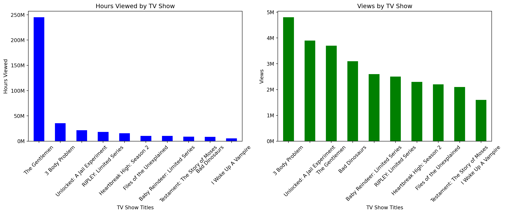

import pandas as pd
import matplotlib.pyplot as plt
from IPython.display import Image, display
import matplotlib.ticker as ticker
from IPython.display import Markdown3 Body Problem (TV series)
Summary
3 Body Problem is an American science fiction television series created by David Benioff, D. B. Weiss and Alexander Woo, based on the Hugo Award–winning Chinese novel The Three-Body Problem by Liu Cixin. It is the second live-action adaptation after the 2023 Chinese television series.
The series premiered on Netflix with eight episodes on March 21, 2024, and received mixed to positive reviews.
Premise
Ye Wenjie, an astrophysicist who sees her father beaten to death during a struggle session in the Chinese Cultural Revolution, is conscripted by the military. Due to her scientific background she is sent to a secret military base in a remote region. Her decision at the base to respond to contact from an alien planet implicates a group of scientists in the present day, forcing them to confront humanity’s greatest threat.
display(Image(filename='b.jpeg'))Critical response
The review aggregator Rotten Tomatoes reported a 80% approval rating with an average rating of 6.8/10, based on 104 critic reviews. The website’s critics’ consensus reads, “Tackling its ambitious source material with impressive gusto, 3 Body Problem’s first season proves a solid start that should leave sci-fi fans eager for more.” Metacritic assigned it a score of 70 out of 100, based on 40 critics, indicating “generally favorable reviews”.
df = pd.read_excel("stats.xlsx")
df| Title | Hours_viewed | Views | |
|---|---|---|---|
| 0 | 3 Body Problem | 35,500,000 | 4,800,000 |
| 1 | Unlocked: A Jail Experiment | 21,600,000 | 3,900,000 |
| 2 | The Gentlemen | 24,5000,000 | 3,700,000 |
| 3 | Bad Dinosaurs | 8,700,000 | 3,100,000 |
| 4 | Baby Reindeer: Limited Series | 10,400,000 | 2,600,000 |
| 5 | RIPLEY: Limited Series | 18,400,000 | 2,500,000 |
| 6 | Heartbreak High: Season 2 | 15,800,000 | 2,300,000 |
| 7 | Files of the Unexplained | 10,600,000 | 2,200,000 |
| 8 | Testament: The Story of Moses | 9,000,000 | 2,100,000 |
| 9 | I Woke Up A Vampire | 5,600,000 | 1,600,000 |
Top Netflix shows April views stats
if df['Hours_viewed'].dtype == 'object':
df['Hours_viewed'] = df['Hours_viewed'].str.replace(',', '').astype(int)
if df['Views'].dtype == 'object':
df['Views'] = df['Views'].str.replace(',', '').astype(int)
# Set up area for the two subplots
fig, axes = plt.subplots(nrows=1, ncols=2, figsize=(14, 6))
# Hours viewed
df.sort_values(by='Hours_viewed', ascending=False).plot(
x='Title', y='Hours_viewed', kind='bar', ax=axes[0], color='blue', legend=False
)
axes[0].set_title('Hours Viewed by TV Show')
axes[0].set_ylabel('Hours Viewed')
axes[0].set_xlabel('TV Show Titles')
axes[0].tick_params(axis='x', rotation=45)
# Format the y-axis to show numbers as millions without scientific notation
axes[0].yaxis.set_major_formatter(ticker.FuncFormatter(lambda x, pos: '{:,.0f}'.format(x/1e6) + 'M'))
# Views
df.sort_values(by='Views', ascending=False).plot(
x='Title', y='Views', kind='bar', ax=axes[1], color='green', legend=False
)
axes[1].set_title('Views by TV Show')
axes[1].set_ylabel('Views')
axes[1].set_xlabel('TV Show Titles')
axes[1].tick_params(axis='x', rotation=45)
# Format the y-axis to display numbers as millions without scientific notation
axes[1].yaxis.set_major_formatter(ticker.FuncFormatter(lambda x, pos: '{:,.0f}'.format(x/1e6) + 'M'))
plt.tight_layout()
plt.show() 
Comparison of 3 Body Problem views to other Top Netflix series
reference_views = df[df['Title'] == '3 Body Problem']['Views'].iloc[0]
df['Views_difference'] = reference_views - df['Views']
# Markdown string with dynamic content
markdown_str = "\n".join([
f"- {row['Title']} has {row['Views_difference']:,} fewer views than 3 Body Problem."
for index, row in df.iterrows() if row['Title'] != '3 Body Problem'
])
# Display the markdown string as it would be in markdown cell
display(Markdown(markdown_str))- Unlocked: A Jail Experiment has 900,000 fewer views than 3 Body Problem.
- The Gentlemen has 1,100,000 fewer views than 3 Body Problem.
- Bad Dinosaurs has 1,700,000 fewer views than 3 Body Problem.
- Baby Reindeer: Limited Series has 2,200,000 fewer views than 3 Body Problem.
- RIPLEY: Limited Series has 2,300,000 fewer views than 3 Body Problem.
- Heartbreak High: Season 2 has 2,500,000 fewer views than 3 Body Problem.
- Files of the Unexplained has 2,600,000 fewer views than 3 Body Problem.
- Testament: The Story of Moses has 2,700,000 fewer views than 3 Body Problem.
- I Woke Up A Vampire has 3,200,000 fewer views than 3 Body Problem.